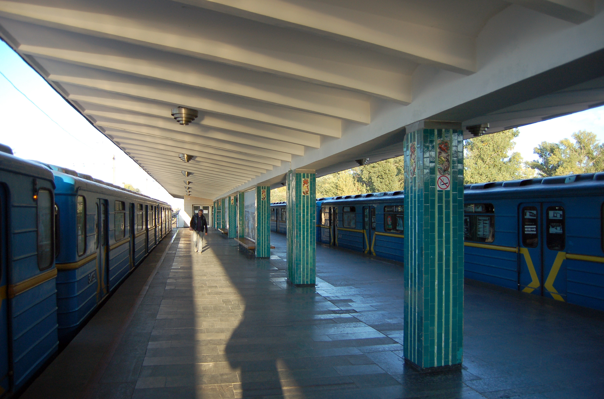

About
ENG 🇬🇧 -> JPN 🇯🇵 -> UKR 🇺🇦
[ENG]
Hidropark is the 8th station of the Kyiv subway on the Sviatoshynsko-Brovarska line between the Dnipro and Livoberezhna stations. It is located on Venetskyi Island in the Dniprovskyi district of Kyiv, along Brovarskyi Avenue.
The station was opened on November 5, 1965. Hidropark station is an above-ground station with two exits connecting to underground passages under the subway line.
The design of the station is an open ground platform with one side and one island platform. The side platform is not used.
The station has no track development.
The three stations - Hidropark, Livoberezhna, and Darnytsia - were built according to the same standard design, with a difference in the location of exits and the color of the tiles on the columns. Passenger traffic is 7.8 thousand passengers per day. It is the only Kyiv metro station that does not have access to public transportation.
The simplicity of the architectural forms, color and design of the station - all this helps to perceive it as a park architecture. The Hidropark is a favorite vacation spot for Kyiv residents. After all, it takes just a few minutes to get from the city center to the gentle sandy shores of the Dnipro and its bays.
Initially, the station was built with only one (western) exit. Due to the high passenger traffic in summer, in 1973 a right-hand platform was built on the first track, which was used for disembarking passengers until 1987. The second (eastern) exit was built without closing the traffic and opened on December 30, 1987, and is used only in summer.
[JPN]
ハイドロパークは、ドニプロ駅とリボベレシュナ駅の間にあるスヴィアトシンスコ・ブロヴァルスカ線のキーウ地下鉄8番目の駅である。キーウのドニプロフスキー地区、ブロヴァルスキー通り沿いのヴェネツキー島に位置する。
駅は1965年11月5日に開業した。ハイドロパーク駅は地上駅で、2つの出口から地下鉄の地下通路に通じている。
駅のデザインは、1つの側面ホームと1つの島式ホームを持つ開放的な地上ホームである。側面ホームは使用されていない。
駅には線路は敷設されていない。
ハイドロパーク駅、リボベレシュナ駅、ダルニツィア駅の3駅は、出口の位置と柱のタイルの色が異なるだけで、同じ標準設計に従って建設された。乗客数は1日7.8千人。公共交通機関を利用できない唯一の地下鉄駅である。
シンプルな建築形態、色彩、駅のデザイン、これらすべてが、この駅を公園建築として認識させるのに役立っている。水上公園は、キーウ市民の憩いの場となっている。街の中心部からドニプロ川の穏やかな砂浜や湾まで、ほんの数分で行くことができるのだ。
当初、駅は西側の出口1つだけで建設された。夏の旅客数が多かったため、1973年に1番線に右側ホームが建設され、1987年まで乗客の降車に使用された。2つ目（東側）の出口は、通行止めにすることなく建設され、1987年12月30日にオープンした。
[UKR]
Гідропа́рк — 8-ма станція Київського метрополітену на Святошинсько-Броварській лінії між станціями «Дніпро» та «Лівобережною». Розташована на Венеційському острові у Дніпровському районі Києва, вздовж Броварського проспекту.
Станція відкрита 5 листопада 1965 року. Станція «Гідропарк» наземна, має два виходи, що сполучаються з підземними переходами під лінією метрополітену.
Конструкція станції — наземна відкрита з однією бічною та однією острівною платформами. Бічна не використовується.
Станція без колійного розвитку.
Три станції — «Гідропарк», «Лівобережна» та «Дарниця» побудовані за одним типовим проєктом, різнить їх розташування виходів та колір облицювальної плитки на колонах. Пасажиропотік — 7,8 тис. пасажирів на добу. Єдина станція київського метрополітену, у якої немає виходу до громадського транспорту.
Простота архітектурних форм, колірне і конструктивне рішення станції — все це допомагає сприйняттю її як архітектури паркової споруди. Гідропарк є улюбленим місцем відпочинку киян. Адже всього за декілька хвилин можна дістатися від центру міста до пологих піщаних берегів Дніпра та його заток.
Спочатку станцію було побудовано лише з одним (західним) виходом. Внаслідок високого пасажиропотоку в літній період у 1973 році на першій колії побудована права платформа, яка використовувалась для висадки пасажирів до 1987 року. Другий (східний) вихід був побудований без закриття руху і відкритий 30 грудня 1987 року, використовується лише в літній час.
Джерело: Вікіпедія
